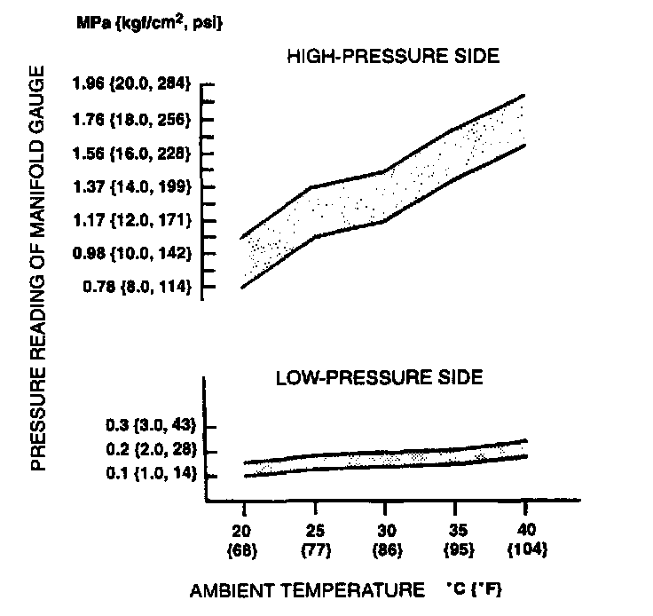

Refrigerant Pressure Check
REFRIGERANT PRESSURE CHECK1. Install the manifold gauge set.
2. Open the hood.
3. Close all the doors and all the windows.
4. Warm up the engine and run it at a constant 1,500 rpm.
5. Turn the A/C switch on.
6. Set the fan switch at 4th.
7. Set the REC/FRESH lever to REC.
8. Set the mode lever to VENT.
9. Set the temperature control lever to MAX COLD.

10. Measure the high- and low-pressure side readings of the manifold gauge.
11. If the high- and low-pressure side readings are in the shaded zones shown in the figure, the refrigerant system is normal.
12. If the high- and low-pressure side readings are not as specified, troubleshoot the refrigerant system.